Hilfe
Jede Funktion, Schritt für Schritt. Ubuntu und Android zeigen, wo es sich unterscheidet.
Mit oder ohne Server
Beim ersten Start fragt LiNotes nach der Adresse deines Servers. Die bekommst du von der Person, die den Server betreibt, oder du richtest dir selbst einen ein.
Kein Server? Tippe auf „Ohne Server nutzen“. LiNotes ist dann eine Notizen-App, bei der alles verschlüsselt nur auf diesem Gerät liegt. Später kannst du unter Einstellungen → „Mit Server verbinden …“ Ubuntu Kontomenü einen Server eintragen. Deine Notizen werden dann hochgeladen.
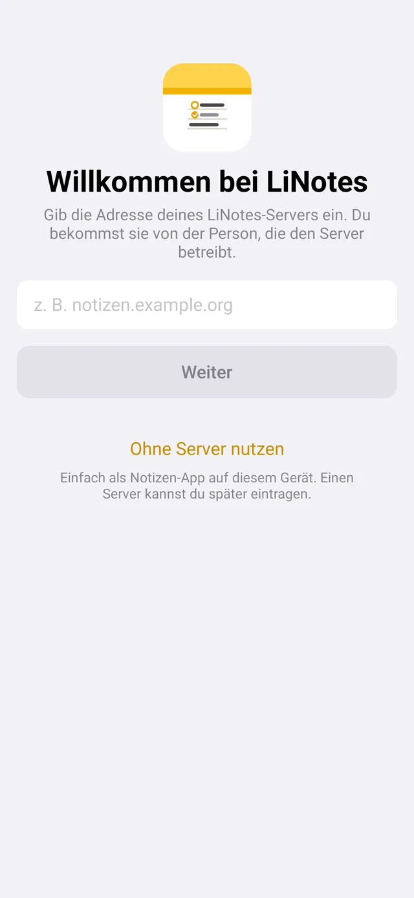
Konto und Schlüsseldatei
- Konto anlegenServeradresse eingeben, „Neues Konto erstellen“ wählen, dann Einladungscode, Benutzernamen (klein, ohne Leerzeichen) und deinen Namen. Ein Passwort gibt es nicht: dein Konto schützt ein Schlüssel, der nur auf deinen Geräten liegt.
- Schlüsseldatei sichernEinstellungen → „Schlüsseldatei sichern …“ Ubuntu Kontomenü. Passphrase wählen und die Datei z. B. auf einem USB-Stick verwahren. Verlierst du alle Geräte, kommst du nur damit wieder an deine Notizen. Niemand sonst kann sie wiederherstellen. LiNotes erinnert dich nach ein paar Tagen daran.
Weiteres Gerät verbinden
- Auf dem neuen GerätServeradresse eingeben und „Mit anderem Gerät verbinden“ wählen, dann deinen Benutzernamen.
- Code bestätigenDas neue Gerät zeigt einen 6-stelligen Code und einen QR-Code. Auf einem Gerät, auf dem du schon angemeldet bist, erscheint „Neues Gerät verbinden?“, dort den Code eintippen oder scannen. Warst du es nicht selbst: „Ablehnen“.
Neue Notiz
Android Stift-Symbol oben rechts oder unten in der Notiz. Ubuntu Stift-Symbol in der Leiste oder Strg+N.
Schnelle Notiz von überall: Android In den Schnelleinstellungen (Wischen von oben) die Kachel „Neue Notiz“ hinzufügen. Ubuntu linotes --neue-notiz öffnet sofort eine neue Notiz, z. B. als eigenes Tastenkürzel in den Ubuntu-Einstellungen.
Die erste Zeile wird automatisch zum Titel. Eine neue Notiz, in die du nichts schreibst, verschwindet beim Verlassen von selbst, wie bei Apple.
Formatieren
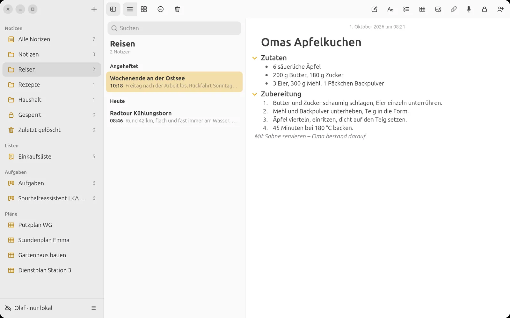
Über „Aa“ wählst du Titel, Überschrift, Unterüberschrift, Text, Monospace, Aufzählung, Liste mit Strichen, nummerierte Liste und Zitat. Fett, kursiv, unterstrichen und durchgestrichen stehen im selben Menü.
Einrücken: Tab / Shift+Tab Ubuntu bzw. über „Aa“ Android. Eine Trennlinie entsteht, wenn du auf einer leeren Zeile --- tippst und Enter drückst.
Checklisten
Checklisten-Symbol in der Leiste, dann einfach Punkte schreiben. Den Kreis antippen, um einen Punkt abzuhaken. Eine leere Zeile beendet die Liste. Über „Mehr“ lassen sich abgehakte Punkte automatisch nach unten sortieren.
Markieren, Textfarbe, Schrift, Ausrichtung
Text auswählen und über „Aa“ markieren: in Gelb, Orange, Rosa, Lila, Mint oder Blau. Im selben Menü: Textfarbe, Schriftart und Ausrichtung (links, zentriert, rechts). Ubuntu Gelb markieren geht auch mit Strg+Alt+H.
Tabellen
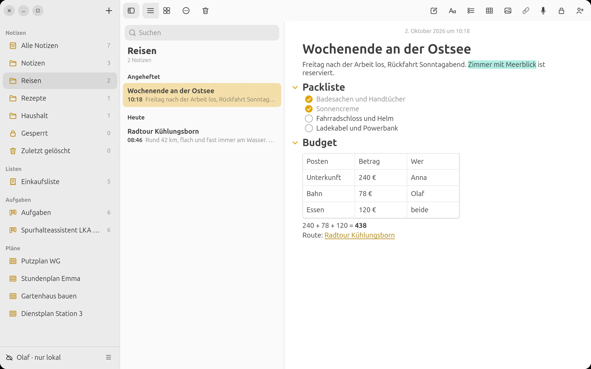
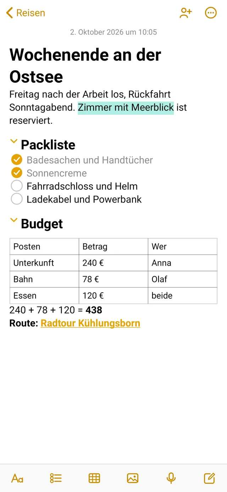
Einfügen: Tabellen-Symbol in der Leiste. Du bekommst eine Tabelle mit 3 × 3 Zellen.
Ubuntu Direkt in die Zellen schreiben. Tab springt zur nächsten Zelle, in der letzten Zelle entsteht eine neue Zeile. Enter und die Pfeiltasten wechseln die Zeile. Rechtsklick auf eine Zelle: Zeile darüber/darunter, Spalte links/rechts einfügen, Zeile oder Spalte löschen, Tabelle löschen.
Android Die Tabelle öffnet sich im Tabellen-Editor. „Weiter“ auf der Tastatur springt zur nächsten Zelle. Unten fügst du Zeilen und Spalten neben der gewählten Zelle ein oder löschst sie. In der Notiz die Tabelle antippen, um sie wieder zu bearbeiten.
Rechnen
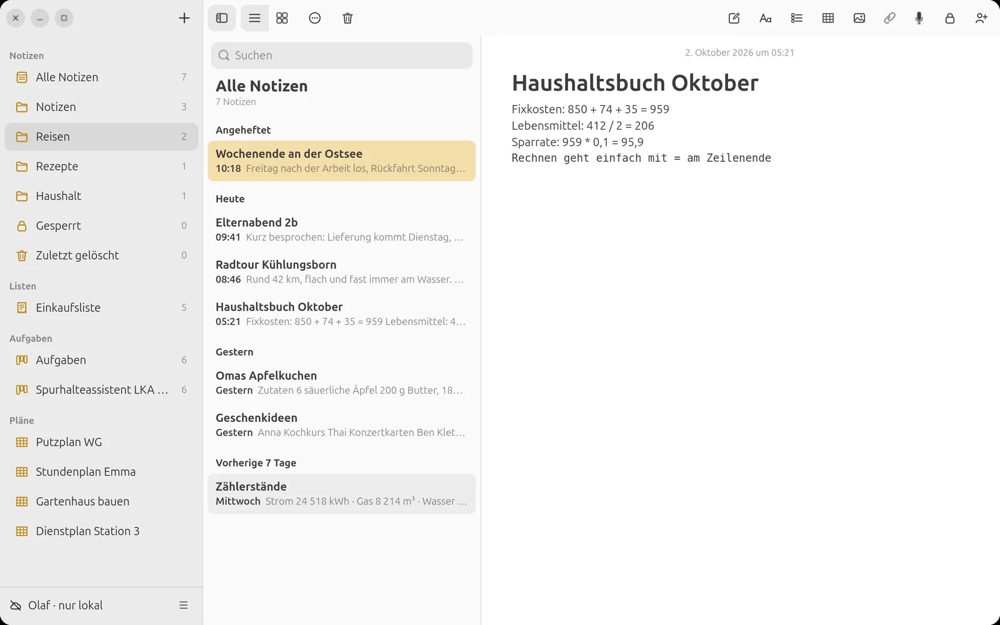
Schreib eine Rechnung und ein = ans Ende der Zeile. LiNotes ergänzt das Ergebnis. Es gilt Punkt vor Strich, Klammern funktionieren, Dezimalzahlen mit Komma. Eine Beschriftung davor stört nicht: Fixkosten: 850 + 74 + 35 = ergibt 959.
Fotos, Dateien, PDFs
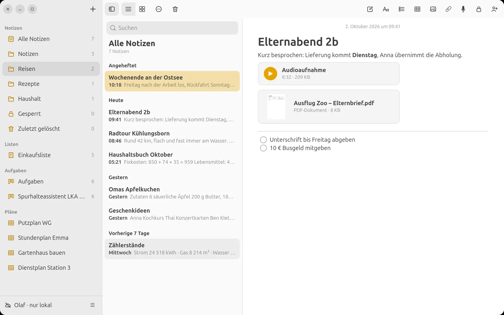
Android Foto-Symbol → „Foto aufnehmen“, „Aus Fotos wählen“ oder „Datei anhängen …“. Ubuntu Foto-Symbol bzw. Büroklammer, oder Dateien einfach in die Notiz ziehen.
Anhänge werden wie alles andere verschlüsselt. PDFs zeigen eine Vorschau der ersten Seite; antippen öffnet die Datei mit der passenden App.
Audio aufnehmen
Mikrofon-Symbol in der Leiste antippen. Die Aufnahme beginnt sofort, die Zeit läuft mit. „Fertig“ legt sie in die Notiz, „Abbrechen“ verwirft sie. Beim ersten Mal fragt Android nach der Mikrofon-Erlaubnis.
Die Aufnahme erscheint als Sprachnachricht wie in Apples Nachrichten: farbige Blase mit Wiedergabetaste, Wellenform und Dauer. Antippen spielt sie direkt in der Notiz ab, noch einmal antippen pausiert. Ein Tipp auf die Wellenform springt an diese Stelle; die Zeit zählt rückwärts. Aufnahmen vom Handy lassen sich am Rechner abspielen und umgekehrt.
Ein Bild in der Notiz antippen bzw. anklicken öffnet es groß in der Schnellansicht.
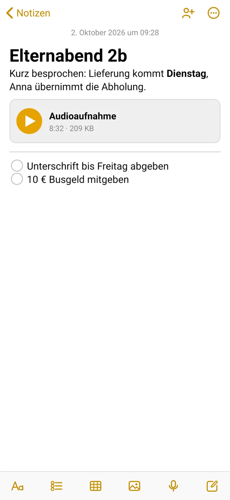
Abschnitte einklappen
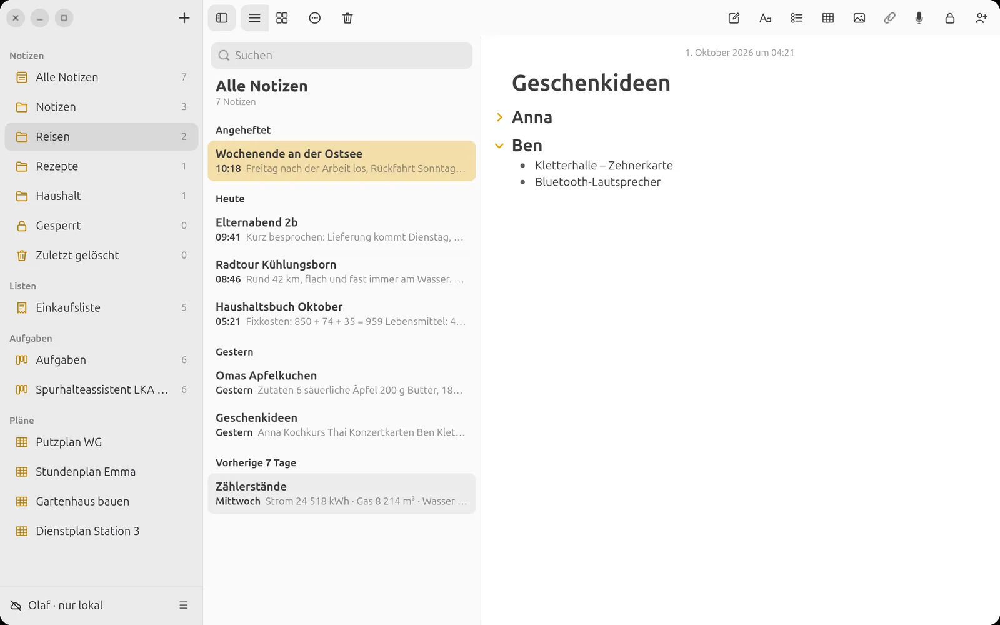
Überschriften und Unterüberschriften mit Inhalt darunter haben links einen Pfeil. Antippen klappt alles bis zur nächsten Überschrift gleicher Stufe ein. Der Zustand wird mit der Notiz gespeichert und gilt auf allen Geräten. Im PDF steht immer alles.
Notizen verlinken
Tippe >>. Es erscheint eine Auswahl deiner Notizen; weitertippen filtert. Ubuntu Auch mit Strg+K. Der Link zeigt immer den aktuellen Titel, auch wenn du die verlinkte Notiz umbenennst. Antippen öffnet sie.
Webadressen in Notizen sind automatisch antippbar.
Vorlagen
Ubuntu „+“ über der Seitenleiste → „Neue Notiz aus Vorlage …“. Android In einem Ordner „…“ → „Neue Notiz aus Vorlage …“. Mitgeliefert sind Besprechung, Protokoll, Reisecheckliste und Tagebuch.
Eigene Vorlage: Eine Notiz anlegen und Ubuntu Rechtsklick bzw. Android lange drücken → „Als Vorlage verwenden“. Platzhalter werden beim Anlegen ersetzt: {{Datum}}, {{Uhrzeit}}, {{Wochentag}}. Aus „Besprechung {{Datum}}“ wird z. B. „Besprechung 04.10.2026“.
Link-Vorschau
Steht eine Webadresse allein in einer Zeile, wird sie nach Enter zur Vorschau mit Titel, Bild und Domain, wie bei Apple. Ab Werk ist das aus: Ubuntu Darstellungsmenü (⋯) → „Link-Vorschau (Webseite abrufen)“, Android Einstellungen → „Link-Vorschau“.
Datenschutz wie bei Signal: Nur das Gerät, auf dem du den Link einfügst, ruft die Seite ab. Der Betreiber sieht dabei die Adresse deines Anschlusses, sonst nichts. Die Vorschau samt Bild liegt verschlüsselt in der Notiz; andere Geräte rufen nichts ab. Gesperrte Notizen bekommen keine Vorschau.
Vorschau anklicken öffnet die Seite. Ubuntu Rechtsklick → „Nur als Adresse zeigen“. Android antippen → „Im Browser öffnen“ oder „Nur als Adresse zeigen“.
Profi-Funktionen
Ab Werk zeigt LiNotes nur, was man im Alltag braucht. Wer mehr will, schaltet die Profi-Funktionen ein: Ubuntu Darstellungsmenü (⋯) → „Profi-Funktionen“, Android Einstellungen → „Profi-Funktionen“. Der Schalter gilt für dein Konto auf allen Geräten.
Code mit Syntaxfarben: Im Format-Menü „Code“ und die Sprache wählen (Python, Kotlin, Shell, JSON). Schlüsselwörter, Texte, Kommentare und Zahlen werden eingefärbt, auch im PDF. Ein leerer Code-Absatz mit Enter beendet den Block. Notizen mit Code werden immer farbig angezeigt, auch wenn die Profi-Funktionen aus sind.
Fußnoten und Quellen: Im Format-Menü „Fußnote / Quelle …“. An der Cursorstelle erscheint eine hochgestellte Nummer, der Text steht unten in der Liste „Fußnoten und Quellen“ (so entsteht ein Literaturverzeichnis) und am Ende des PDFs. Die Nummern zählen sich von selbst durch. Nummer anklicken bzw. antippen, um den Text zu ändern oder die Fußnote zu entfernen.
Formeln (LaTeX): Im Format-Menü „Formel (LaTeX) …“: Formeln in der Schreibweise von LaTeX, z. B. \frac{a}{b}, x^2, \sqrt{x}, \alpha, \sum_{i=1}^{n}, \int_0^1, Matrizen (\begin{pmatrix} … \end{pmatrix}) und Fallunterscheidungen (cases). LiNotes setzt sie selbst, ohne Internet, in der Notiz und im PDF. Formel anklicken bzw. antippen, um sie zu ändern; was LiNotes nicht kennt, wird rot markiert. Ältere LiNotes-Versionen zeigen den LaTeX-Text.
@-Erwähnungen
In geteilten Notizen am Wortanfang @ tippen. Es erscheinen die Personen, mit denen die Notiz geteilt ist. Die erwähnte Person bekommt eine Benachrichtigung „… hat dich erwähnt“; antippen öffnet die Notiz.
Änderungen anderer sehen
Hat jemand eine geteilte Notiz geändert, seit du sie zuletzt angesehen hast, steht in der Liste ein Punkt vor dem Titel. In der Notiz zeigt eine Zeile, wer wann geändert hat, und die geänderten Zeilen sind farbig hinterlegt. Ändert jemand die Notiz, während du sie offen hast, erscheint die Markierung sofort.
Ordner, Sortieren, Galerie, Anheften
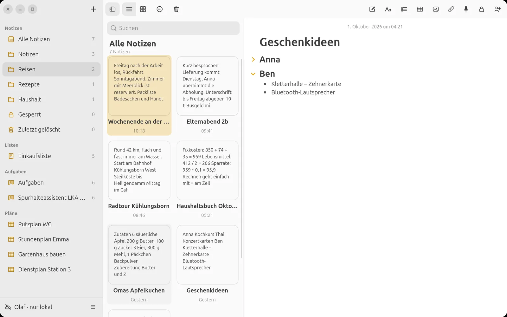
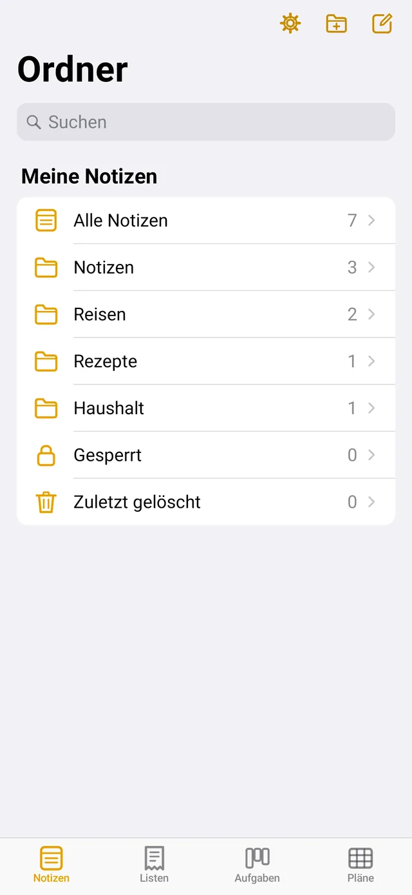
- Ordner und Unterordner: Android Ordner-Symbol oben rechts. Ubuntu „+“ über der Seitenleiste. Ordner lassen sich beliebig tief verschachteln.
- Verschieben: Notizen, Listen, Boards und Pläne auf einen Ordner ziehen, Android gedrückt halten und ziehen, Ubuntu mit der Maus. Oder lange drücken / Rechtsklick → „Verschieben nach …“.
- Sortieren: Menü „…“ → Bearbeitungsdatum, Erstellungsdatum oder Titel. Gilt auf allen Geräten.
- Galerie: Menü „…“ → „Als Galerie anzeigen“ Ubuntu oder Strg+2.
- Anheften: Notiz lange drücken / Rechtsklick → „Anheften“. Angeheftete Notizen stehen oben.
Suchen und Tags
Das Suchfeld über der Liste durchsucht alle Notizen. Schreibe #Wort in eine Notiz. Der Tag erscheint in der Übersicht zum Filtern.
Gesperrte Notizen
In der Notiz „Mehr“ → „Notiz sperren“ Ubuntu Schloss-Symbol. Beim ersten Mal legst du ein Notizen-Passwort fest. Der Titel bleibt sichtbar, der Inhalt ist zusätzlich verschlüsselt. Am Handy lässt sich das Entsperren mit Fingerabdruck, PIN oder Muster einschalten (Einstellungen → Gesperrte Notizen).
Entsperrte Notizen sperren sich nach einigen Minuten ohne Benutzung und beim Verlassen der App wieder. Sofort: Schloss-Symbol in der Notiz oder „Entsperrte Notizen jetzt sperren“. Geteilte Notizen können nicht gesperrt werden.
PDF und Drucken
Android In der Notiz „Mehr“ → „Als PDF senden …“ oder „Drucken …“. Ubuntu Rechtsklick auf die Notiz → „Als PDF exportieren …“ (Strg+Shift+E) oder „Drucken …“ (Strg+P). Das PDF sieht aus wie die Notiz, mit Überschriften, Listen, Tabellen und Fotos.
Zuletzt gelöscht
Gelöschte Notizen liegen 30 Tage in „Zuletzt gelöscht“ und lassen sich dort wiederherstellen.
Listen
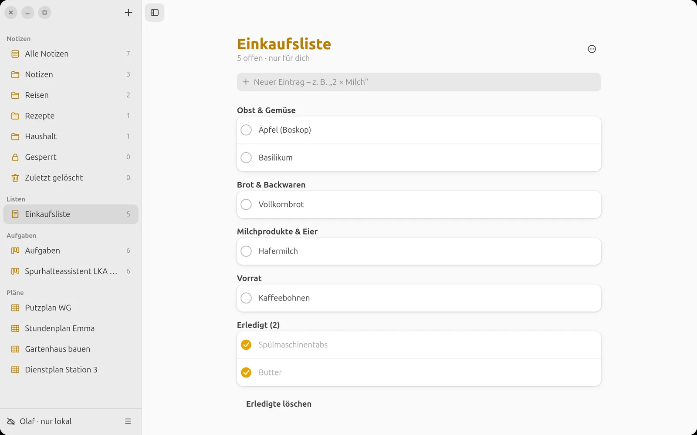
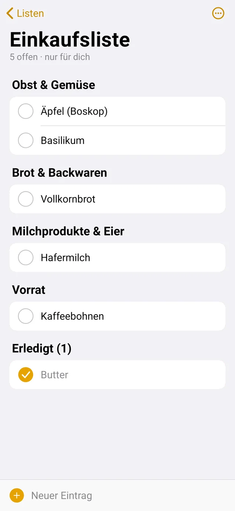
Einträge unten eintippen. Sie landen automatisch in der passenden Warengruppe. Mehrere Zeilen einfügen legt mehrere Einträge an. Abgehakt wird mit dem Kreis; „Erledigte löschen“ räumt auf. Was andere neu eintragen, zeigt ein Zähler am Reiter „Listen“.
Aufgaben-Boards
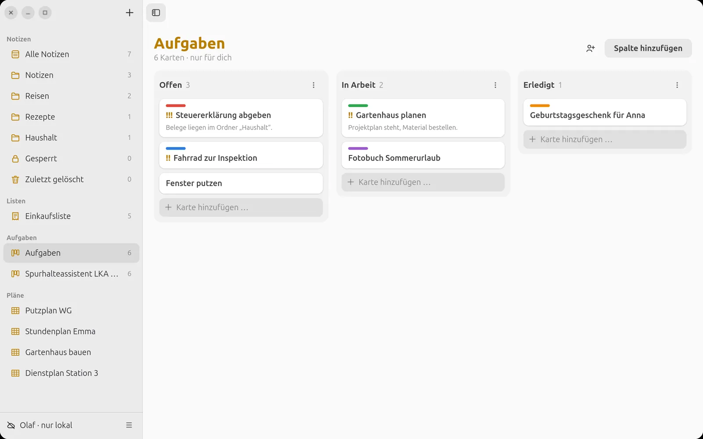
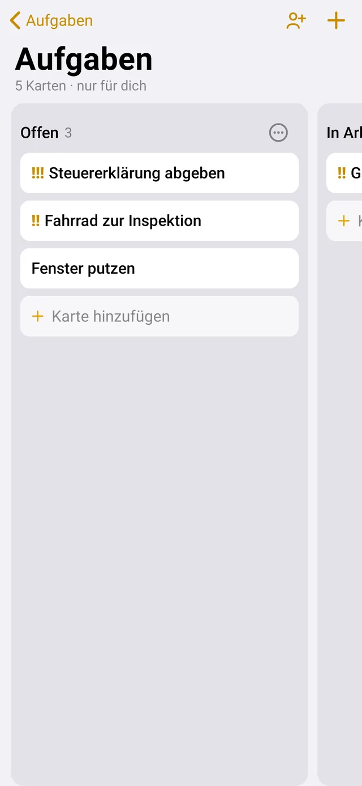
Neue Karte mit „Karte hinzufügen …“ unter einer Spalte. Karte antippen für Fälligkeit, Zuständigkeit, Priorität, Farbe und Notizen. Ubuntu Karten mit der Maus in eine andere Spalte ziehen. Android Karte lange drücken → Spalte wählen. Spalten lassen sich umbenennen, hinzufügen und löschen.
Bericht: Android Board lange drücken → „Bericht teilen (PDF)“. Ubuntu Export-Symbol (Kasten mit Pfeil) oben im Board oder Rechtsklick → „Bericht exportieren …“ (PDF oder CSV). Leute einladen: Personen-Symbol daneben.
Entwicklungsprojekte
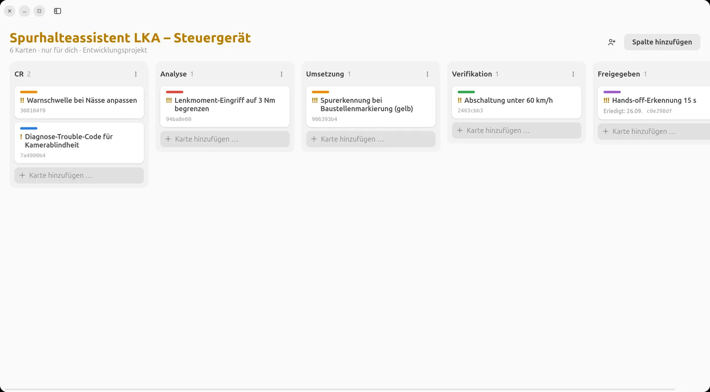
Board lange drücken / Rechtsklick → „Als Entwicklungsprojekt führen“. Dann zeigen die Karten ihre Kurz-ID zum Zitieren in Commits und Berichten, und im Karten-Dialog gibt es zusätzlich:
- Auswirkungsanalyse: was betroffen ist, welche Risiken, was mitgeprüft werden muss.
- Verifikation: Tests und Prüfungen, dazu Nachweise als Dateien: Prüfprotokolle, Screenshots, Messdaten. Sie liegen verschlüsselt an der Karte, mit Zeitpunkt, Person und Prüfsumme (SHA-256). So lässt sich später belegen, dass es genau dieses Protokoll war.
- Umgesetzt in Version und die verknüpften Commits (automatisch, wenn die Karten-ID in der Commit-Nachricht steht).
- Verlauf: wer die Karte wann in welche Spalte geschoben hat.
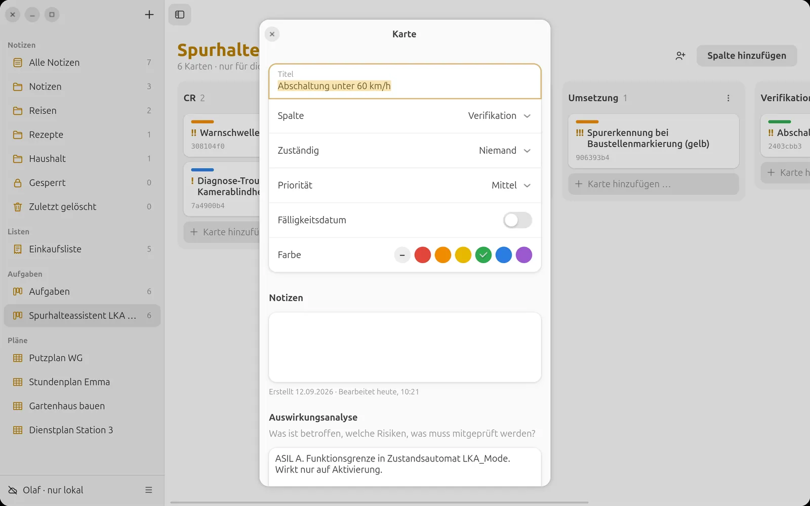
Der Bericht enthält dann eine Traceability-Matrix (Karte ↔ Commits ↔ Verifikation ↔ Version ↔ Abnahme) und für jede Karte eine Detailseite, mit allen Nachweisen samt Prüfsumme, Bilder direkt eingebettet.
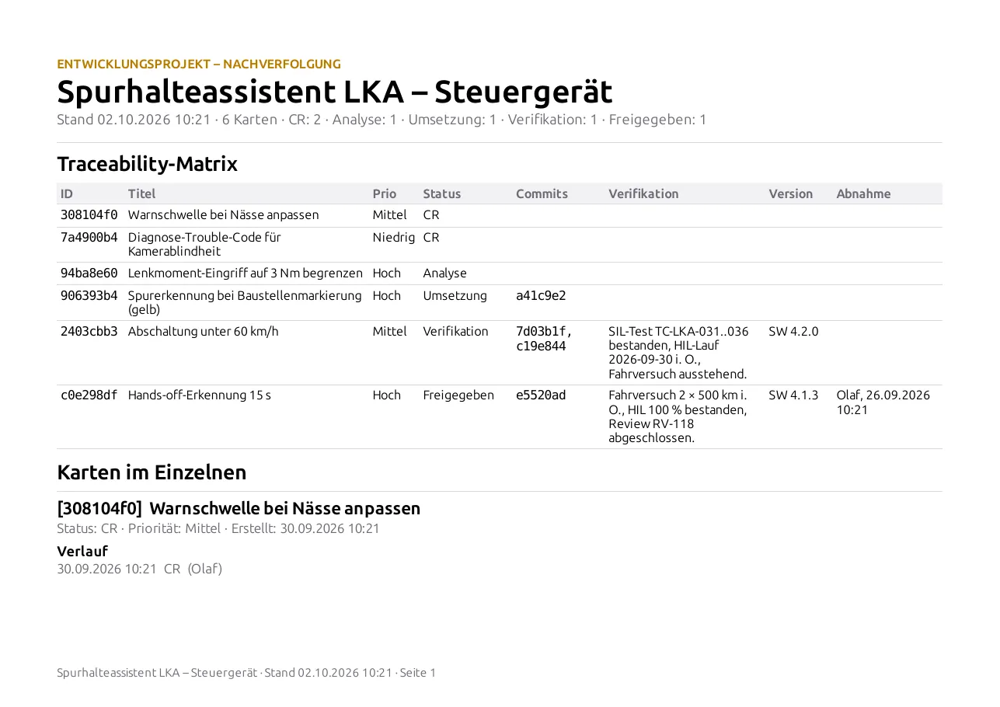
Die Bilder zeigen ein fiktives Beispiel: das Automotive-Projekt „Spurhalteassistent LKA – Steuergerät“ mit den Spalten CR, Analyse, Umsetzung, Verifikation und Freigegeben.
Ausführliche Beispiele: ASIL-D-Projekt nach ISO 26262 und Automotive SPICE · Software entwickeln mit KI.
Pläne
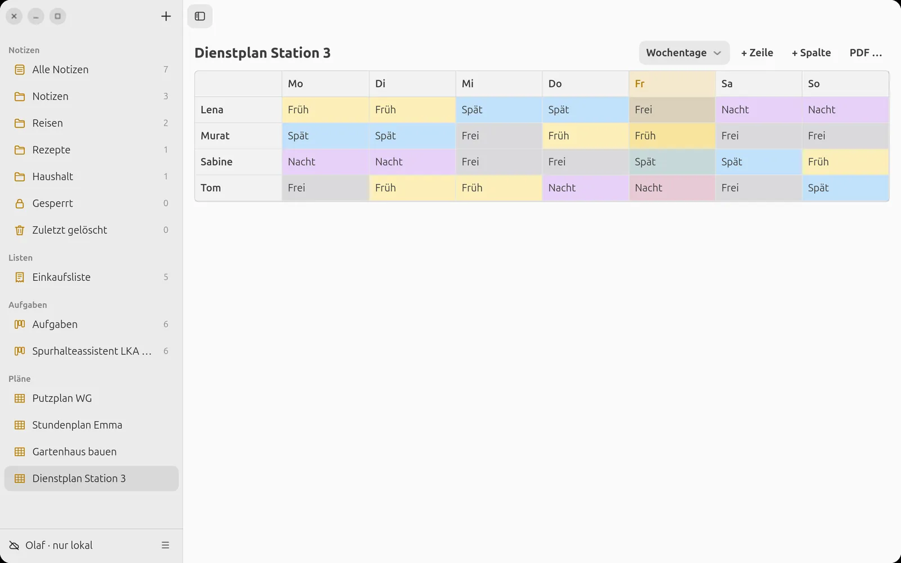
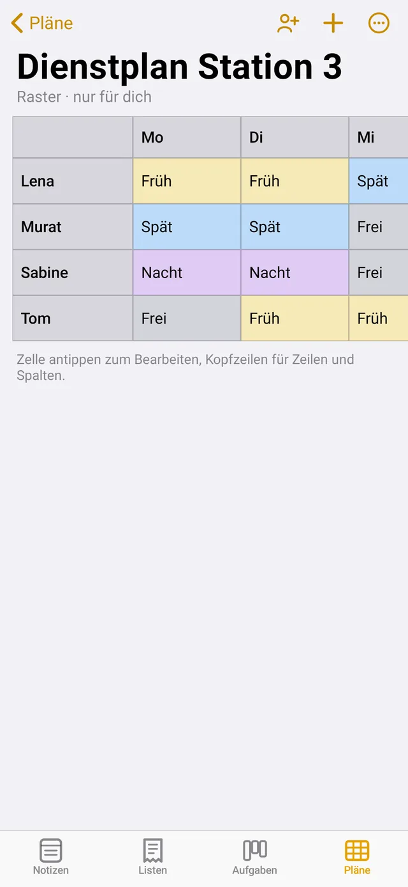
Neuer Plan: Android Reiter „Pläne“ → „+“. Ubuntu „+“ über der Seitenleiste → „Neuer Plan …“. Vorlage wählen: Leerer Plan, Stundenplan, Schichtplan, Putzplan, OP-/Raumplan oder Projektplan.
Raster bearbeiten: Ubuntu Direkt in die Zellen schreiben, Rechtsklick für Farbe, Zeilen und Spalten. Android Zelle antippen für Text und Farbe; Zeilen- und Spaltenköpfe antippen zum Umbenennen, Einfügen und Löschen.
Spaltenart (Menü „…“ bzw. Auswahl oben): freie Spalten, Wochentage, einzelne Tage ab einem Datum oder Kalenderwochen ab dieser Woche. Die heutige Spalte ist hervorgehoben.
PDF: „PDF …“ Ubuntu bzw. „…“ → „Als PDF teilen …“ Android, im Querformat zum Aushängen.
Rotation
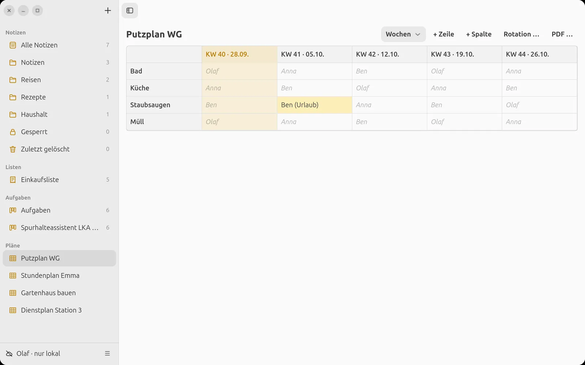
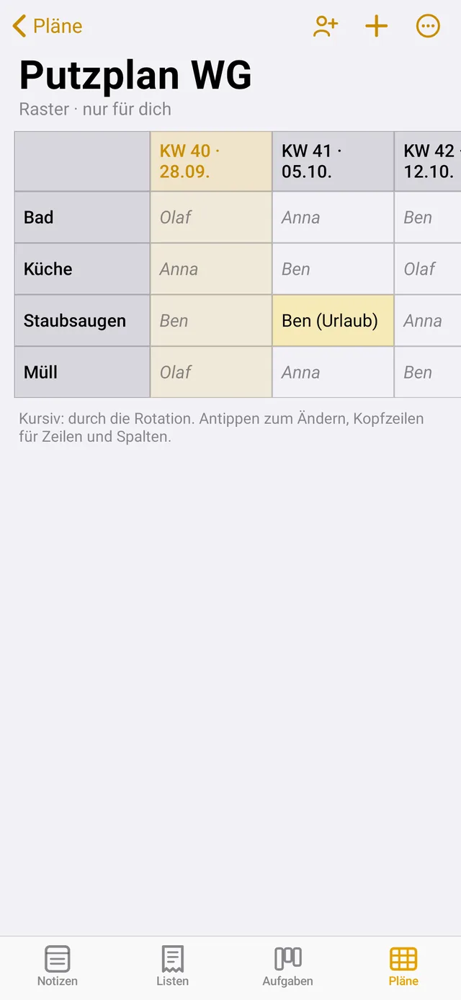
Für Putz- und Dienstpläne mit Spalten „Wochen“: „Rotation …“ wählen und die Namen eintragen, getrennt durch Kommas. Jede Woche rückt jeder Name eine Zeile weiter. Namen aus der Rotation stehen kursiv. Ein eigener Eintrag in einer Zelle (z. B. „Ben (Urlaub)“) gilt nur dort.
Zeitstrahl (Projektplan)
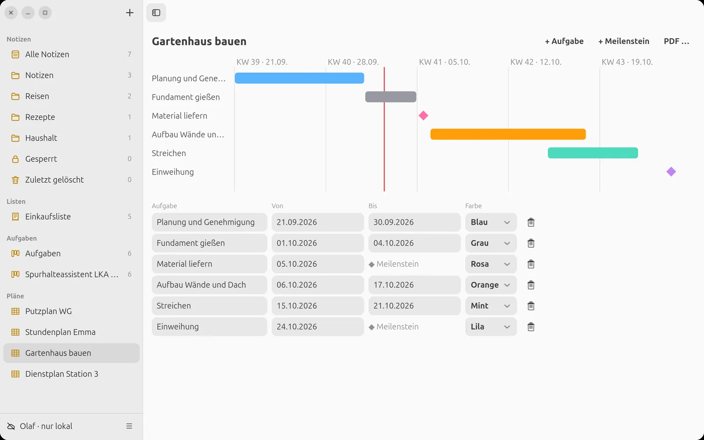
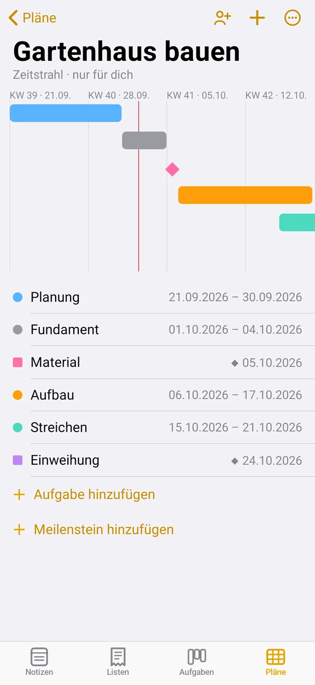
Aufgaben erscheinen als Balken, Meilensteine als Raute, die rote Linie ist heute. Ubuntu „+ Aufgabe“ und „+ Meilenstein“ oben; Name, Von, Bis und Farbe in der Liste darunter ändern. Android „+“ oben rechts oder „Aufgabe hinzufügen“ unter der Liste; eine Aufgabe antippen zum Bearbeiten oder Löschen. Daten im Format TT.MM.JJJJ.
Agiles Arbeiten
Boards in LiNotes eignen sich für agiles Arbeiten. Grundlage ist das Manifest für Agile Softwareentwicklung (2001), hier vollständig im Wortlaut:
Manifest für Agile Softwareentwicklung
Wir erschließen bessere Wege, Software zu entwickeln, indem wir es selbst tun und anderen dabei helfen. Durch diese Tätigkeit haben wir diese Werte zu schätzen gelernt:
Individuen und Interaktionen mehr als Prozesse und Werkzeuge
Funktionierende Software mehr als umfassende Dokumentation
Zusammenarbeit mit dem Kunden mehr als Vertragsverhandlung
Reagieren auf Veränderung mehr als das Befolgen eines PlansDas heißt, obwohl wir die Werte auf der rechten Seite wichtig finden, schätzen wir die Werte auf der linken Seite höher ein.
Kent Beck, Mike Beedle, Arie van Bennekum, Alistair Cockburn, Ward Cunningham, Martin Fowler, James Grenning, Jim Highsmith, Andrew Hunt, Ron Jeffries, Jon Kern, Brian Marick, Robert C. Martin, Steve Mellor, Ken Schwaber, Jeff Sutherland, Dave Thomas
© 2001, the above authors
this declaration may be freely copied in any form,
but only in its entirety through this notice.
Quelle: agilemanifesto.org/iso/de/manifesto.html
Die zwölf Prinzipien, kurz gefasst
- Früh und regelmäßig etwas Nützliches liefern. Das stellt Kunden am besten zufrieden.
- Geänderte Anforderungen sind willkommen, auch spät.
- In kurzen Abständen funktionierende Ergebnisse liefern, lieber Wochen als Monate.
- Fachleute und Entwickler arbeiten täglich zusammen.
- Projekte um motivierte Menschen bauen, ihnen Umfeld, Unterstützung und Vertrauen geben.
- Am besten informiert das direkte Gespräch.
- Fortschritt misst sich an dem, was funktioniert.
- Ein Tempo halten, das alle dauerhaft durchhalten können.
- Technische Qualität und gutes Design machen beweglich.
- Einfachheit: möglichst viel Arbeit gar nicht erst tun müssen.
- Gute Lösungen entstehen in Teams, die sich selbst organisieren.
- Regelmäßig innehalten, gemeinsam besser werden und das Vorgehen anpassen.
In eigenen Worten zusammengefasst; Wortlaut: agilemanifesto.org/iso/de/principles.html
Agil arbeiten mit LiNotes
Ein Board zeigt den Arbeitsfluss auf einen Blick: Spalten wie „Offen – In Arbeit – Erledigt“, jede Karte ein kleines, abgeschlossenes Stück Arbeit. So passen die vier Werte dazu:
- Individuen und Interaktionen: Boards teilen, Karten zuweisen und mit @-Erwähnungen ins Gespräch holen. LiNotes unterstützt das Gespräch, ersetzt es aber nicht.
- Funktionierende Software: Karten klein schneiden und erst nach „Erledigt“ schieben, wenn es wirklich funktioniert; bei Entwicklungsprojekten belegen Nachweise das.
- Zusammenarbeit mit dem Kunden: Auftraggeber ins Board einladen. Sie schreiben Wünsche als Karten und nehmen selbst ab, z. B. so vereinbart, dass nur sie nach „Erledigt“ schieben.
- Reagieren auf Veränderung: Prioritäten jederzeit ändern und Karten umsortieren; Pläne zeigen verschobene Meilensteine offen, statt sie zu verstecken.
Regelmäßig reflektieren: den Bericht als PDF erzeugen und gemeinsam durchgehen. Was lief gut, was ändern wir? Dokumentation nur so viel wie nötig: Auswirkungsanalyse, Verifikation und Nachweise sind für Projekte gedacht, die sie brauchen (z. B. nach ISO 26262 oder Automotive SPICE). Einfache Boards bleiben schlank.
Personen verifizieren
Bevor ihr etwas teilt, verifiziert ihr euch einmal: Einstellungen → „Personen“ → Person antippen Ubuntu Kontomenü → Personen → „Verifizieren“. Dein Gerät zeigt einen Code; auf dem Gerät der anderen Person erscheint eine Anfrage, dort den Code eintippen oder den QR-Code scannen. So kann niemand, auch nicht der Server, euch einen falschen Schlüssel unterschieben.
Teilen
Notiz, Ordner, Liste, Board oder Plan lange drücken / Rechtsklick → „Teilen …“ und Personen auswählen. Ein geteilter Ordner teilt alles darin mit. Entfernst du jemanden, wird automatisch neu verschlüsselt. Geteiltes erkennst du am Personen-Symbol.
Platz auf dem Handy
Einstellungen → „Notizen behalten“ legt fest, wie lange der Inhalt einer Notiz nach der letzten Benutzung auf dem Handy bleibt (immer, 90, 30, 7 Tage oder nur auf dem Server). Pro Notiz: „Mehr“ → „Auf dem Gerät behalten“. Danach wird die Notiz beim Öffnen verschlüsselt geladen. Angeheftete Notizen, Listen und Boards bleiben immer auf dem Gerät.
Was der Server weiß
Alles (Notizen, Listen, Boards, Pläne, Ordnernamen, Bilder und Aufnahmen) wird auf deinem Gerät verschlüsselt, bevor es den Server erreicht. Der Server sieht nur, dass es Einträge gibt, wie groß sie sind und wann sie geändert wurden, nicht, was darin steht. Die Apps enthalten keine Werbung und keine Tracker.
Textgröße, Blocksatz, Silbentrennung
Android Einstellungen → Darstellung: Textgröße, Blocksatz und Silbentrennung (nach der Sprache des Handys). Titel und Überschriften bleiben im Flattersatz.
Ubuntu Menü „…“ neben Liste/Galerie: Textgröße (oder Strg++ / Strg+− / Strg+0) und Blocksatz. Silbentrennung gibt es unter Ubuntu nicht.
Alles gilt pro Gerät: groß und im Blocksatz am Handy, kompakt am Laptop.
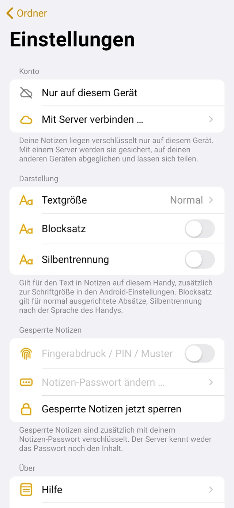
Notiz in eigenem Fenster Ubuntu
Doppelklick auf eine Notiz in der Liste, Rechtsklick → „In eigenem Fenster öffnen“ oder Strg+O. Änderungen gleichen sich in beide Richtungen sofort ab. Strg+W schließt das Notizfenster.
Tastenkürzel Ubuntu
Alle Kürzel mit Suchfeld: Strg+? oder F1. Die wichtigsten:
- Strg+N neue Notiz · Strg+F suchen · Strg+D duplizieren
- Strg+B / I / U fett, kursiv, unterstrichen · Strg+Alt+H markieren
- Strg+Shift+T / H / J Titel, Überschrift, Unterüberschrift
- Strg+Shift+L Checkliste · Strg+Shift+U abhaken
- Strg+Alt+↑ / ↓ Zeile verschieben · Strg+K mit Notiz verlinken
- Strg+Shift+D Trennlinie · Strg+P drucken · Strg+Alt+L gesperrte Notizen sperren
Noch Fragen offen? Zur Startseite · Eigener Server